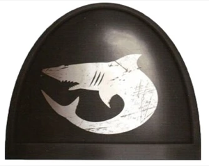

Carcharodons
| Carcharodons | |
|---|---|
| Space Marine Chapter of the Adeptus Astartes | |
 Badge of the Carcharodons: the white shark Artwork © Games Workshop | |
| Founding | Unknown; alleged Second Founding or 23rd Founding |
| Successor of | Raven Guard (unconfirmed) |
| Primarch | Corvus Corax (unconfirmed) |
| Chapter Master | Shade Lord Tyberos, "The Red Wake" |
| Homeworld | None; fleet-based Chapter, later granted Ootheca |
| Fortress-monastery | Battle Barge ''Nicor'' |
| Allegiance | Imperium of Mankind |
| Colours | Grey |
| Warcry | None; the Chapter fights in complete and eerie silence |
The Carcharodons, also known as the ''Carcharodons Astra'' in High Gothic and sometimes as the "Space Sharks" in Low Gothic, are a Loyalist Space Marine Chapter. Their Founding is unknown. It has been alleged that they date from the Second Founding, or that they were raised during the 23rd Founding. They are an alleged Successor of the Raven Guard, though this has not been confirmed.[1]
The Carcharodons have always been a fleet-based Chapter. They follow the rare Nomad-Predation pattern rather than the Crusading pattern used by most mobile Chapters. Their name is synonymous with the cold depths of the void and the predators that lurk there.[1]
Origins
[edit]The Chapter's origins are hard to pin down. The Carcharodons have left no record of their activities in recent history, and they appear nowhere in the open Imperial records. They have no officially recorded battle honours, and they are often confused with lesser-known Chapters of similar names and symbols, such as the "Void Reapers" and the "Blood Sharks".[2]
The oldest reference is in sealed Inquisitorial records. The ''Mythos Angelica Mortis'', compiled by the Secretariat Militum of Terra late in the 35th millennium, names a Chapter called the ''Carcharodon Astra''. It was sent "into the outer darkness" on an endless voyage to ravage the foes of Mankind. The work draws on an older, lost text from the obscure years of the Astropath Wars, at the end of the 32nd millennium and the start of the 33rd. Other records give the Chapter variant names such as the Space Sharks, but they agree on its iconography and on its bestial yet calculated savagery in battle.[2]
The gene-seed of a slain battle-brother, examined by the Deathwatch, was untainted but showed long-term degradation. It carried markers reminiscent of the Raven Guard. The Chapter's title of "Shade Lord" was last used by Arkhas Fal, the exiled Legion Master of the XIXth Legion before Corvus Corax took command, and some scholars therefore suspect that Fal founded the Chapter. Pale skin, and in the oldest battle-brothers black eyes without iris or sclera, are common to the Carcharodons.[2]
The Chapter's own records state that it has served the "Void Father", the Emperor, for ten standard millennia. Its battle-brothers call their unknown primarch the "Forgotten One", and hold that he sent the first Carcharodons, the "Wandering Ancestors", into exile beyond the edge of the galaxy on the first Day of Exile. The Edicts of Exile are to end only when he returns.[2]
Organisation
[edit]The Carcharodons follow the rare Nomad-Predation pattern. Their fleet is self-contained and voyages without end, pausing to attack only targets that it can destroy without threatening its own survival. It is a mismatch of very old, salvaged and heavily repaired vessels. The Chapter's flagship and mobile fortress-monastery is the battle barge ''Nicor''. The forge ship ''Adamantius'' supplies its arms and armour.[2]
The squads follow the ''Codex Astartes'', but the Chapter is split into Battle Companies that operate independently, each with its own Scout auxiliaries and a spearhead of Terminator veterans. The Chapter's commander is the Shade Lord and its captains are company masters. Two of the company masters hold the further titles of Reaper Prime and Harvester Prime. The Reaper Prime gathers recruits, and the Harvester Prime gathers archeotech.[2]
New recruits are taken in the Red Tithes, when the Chapter's Edicts of Exile permit it to descend on an Imperial world and take its population. Most of those taken become serfs and slaves in the fleet, and few of those who attempt the trials live to become Initiates. When its numbers are too thin, the Chapter turns to the renegade Ashen Claws, the former 18th Chapter of the Raven Guard, under an ancient pact. In the Grey Tithes the Chapter collects lost technology from distant worlds and trades it to the Adeptus Mechanicus for weapons, armour and vehicles.[2]
Beliefs and combat doctrine
[edit]The Carcharodons revere the Emperor as ''Rangu'', the Void Father, and many carry prayer scrolls. They decorate their armour with abstract line-work and scrimshaw talismans in the shape of fanged maws and sea predators. It is forbidden for a lower-ranked void brother or serf to touch the wargear of a higher-ranked Astartes, a taboo called ''tapu''.[2]
In the Badab War the Carcharodons operated as a rapid-strike force, probing a target with Scouts and fast units before they fell on its weak points without preparatory bombardment. If an assault failed they withdrew at once and struck elsewhere. Their battles are fought in complete silence, and orders pass over an encrypted vox net. For boarding actions they use the Ursus Claws, barbed lances that pin an enemy ship to the fleet.[2]
Campaigns
[edit]In 811.M37, during the 7th Black Crusade, a "grey-clad" Chapter from the outer night is said to have saved the Blood Angels from Abaddon the Despoiler at Midian. The mention is oblique, and it comes from a mythologised account.[2] Between 860 and 940.M33 the Carcharodons are said to have been one of the five Chapters of the Pentarchy of Blood, which destroyed eleven Chapters judged traitors in the War of the False Primarch. The record of that war was purged.[2] In the 41st millennium they intervened unasked in the fight between an Adeptus Mechanicus Explorator fleet and Ork terror ships in 211.M41.[2] They also fought the Night Lords for a Red Tithe on the prison world of Zartak.[3]
Badab War
[edit]The Carcharodons took part in the later stages of the Badab War. Their fleet appeared without warning in 910.M41 and requested leave from the Loyalist command to enter the war zone and draw blood. Their Force Commander, Tyberos, presented documents of authority issued by several High Lords of Terra and Inquisitors long dead. He submitted to psychic probing and gene-sampling. The Inquisitor Legate vouched for the Chapter, and Lord High Commander Carab Culln of the Red Scorpions accepted them into the line of battle, though he remained wary of their loyalties and of their departures from the Codex.[1]
The Chapter was sent first to the Endymion Cluster, the territory of the Mantis Warriors. It destroyed planets that had sheltered the Mantis Warriors in order to force that Chapter to mass its forces and stop its hit-and-run tactics. In 913.M41, at the last battle on Badab Primaris, the Carcharodons sabotaged the reactors that powered the hive cities and the planetary defence batteries. The tectonic upheaval swallowed whole sectors of the hives and replaced them with seas of lava.[1] In the same year, on Corcyra II, two sub-company-sized forces of the Carcharodons and the Executioners are said to have destroyed each other.[2]
The Mantis Warriors and Ootheca
[edit]With the agreement of the Fire Hawks, who became the new masters of the Mantis Warriors' territory in the Endymion Cluster, the Carcharodons struck at the Tranquility System, the main recruiting grounds of the Mantis Warriors, and took a generation of recruits. They forced those they chose to fight to the death to prove their worth. They ransacked the hidden armouries and bases of the Mantis Warriors, then left the Ultima Segmentum to resume their solitary crusade.[1][3]
Since the birth of the Great Rift and the start of the Era Indomitus, the Carcharodons have been granted the former homeworld of the Mantis Warriors, Ootheca, to hold as they wish.[3] During the Indomitus Crusade a company under Company Master Mannfor, aboard the strike cruiser ''Ma-tahe'', allied itself with Fleet Secundus and retook the Castellus Sanctic of Budor V from the Word Bearers.[4]
Notable members
[edit]- Tyberos, the Shade Lord, called the "Red Wake" and the Reaper Lord of the Void. He commands the ''Nicor'' and the elite 1st Company, the Red Brethren. In Terminator armour he fights with two unique lightning claws called ''Hunger'' and ''Slake''.
- Bail Sharr, Company Master of the 3rd Company and a Reaper Prime.
- Te Kahurangi, the Pale Nomad, Chief Librarian, only three generations removed from the Wandering Ancestors.
Timeline
[edit]| Date | Event |
|---|---|
| Date unknown | The Carcharodons are founded and sent into exile; the date is uncertain |
| 811.M37 | A grey-clad Chapter is said to save the Blood Angels at Midian |
| 910.M41 | The Carcharodons arrive in the Maelstrom Zone and join the Loyalists in the Badab War |
| 913.M41 | The Carcharodons sabotage the reactors of Badab Primaris; the war ends |
| After 913.M41 | The Carcharodons harvest recruits from the Tranquility System and leave the Ultima Segmentum |
| Era Indomitus (M42) | The Carcharodons are granted Ootheca |
See also
[edit]References
[edit]- ^ a b c d e Imperial Armour Volume Ten: The Badab War, Part Two. Forge World. pp. 13-14, 19, 60-61, 69, 86, 114-123.
- ^ a b c d e f g h i j k l m "Carcharodons". Warhammer 40k Wiki (Fandom).
- ^ a b c Macniven, Robbie. Carcharodons: Red Tithe (novel). Black Library. chs. 1, 6, 17.
- ^ White Dwarf 451 (February 2020), "Indomitus Crusade Heroes". Games Workshop. p. 60.